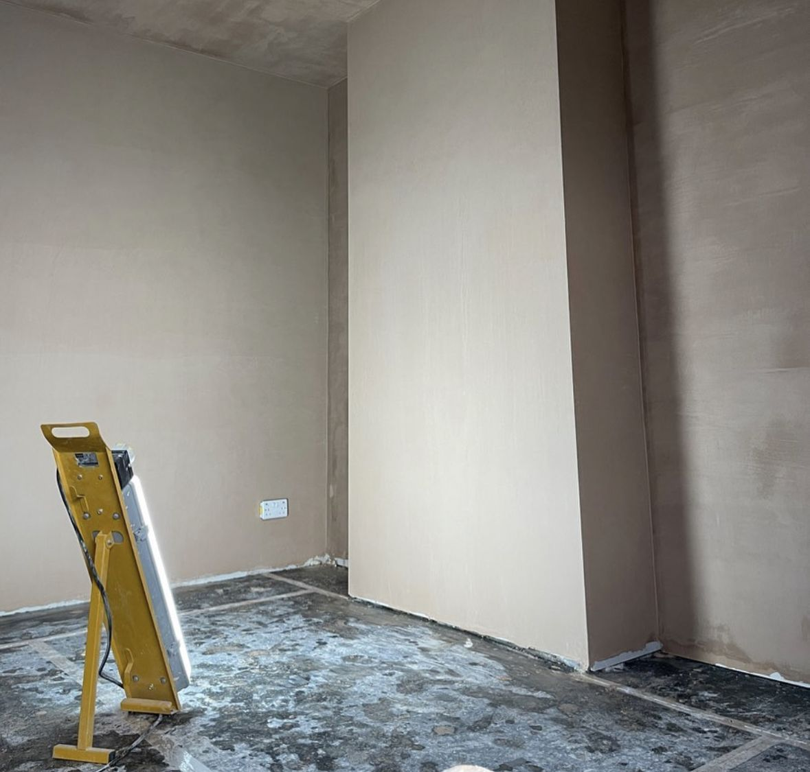
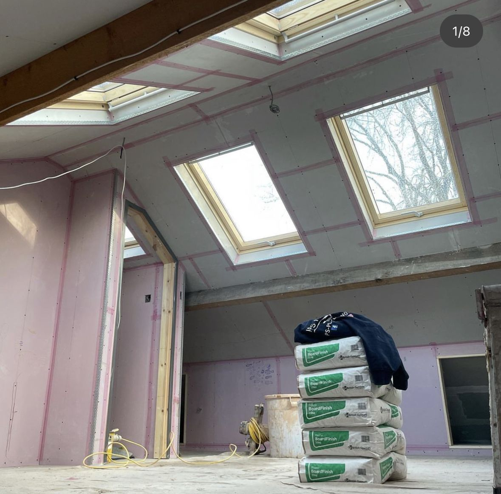
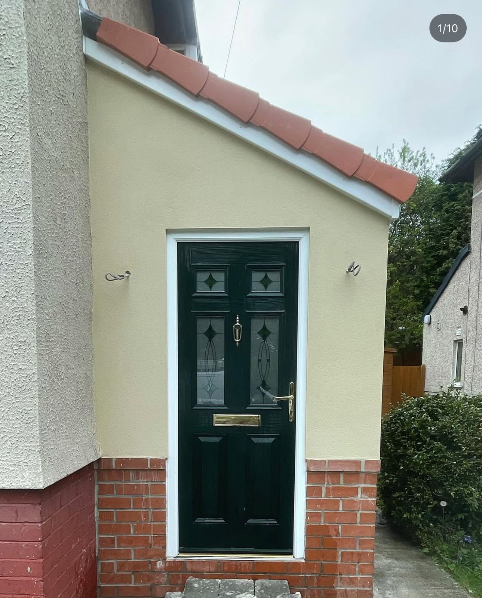
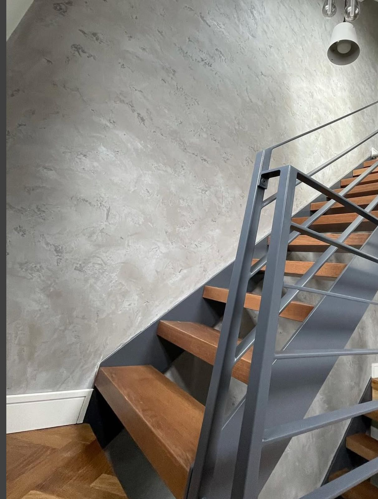
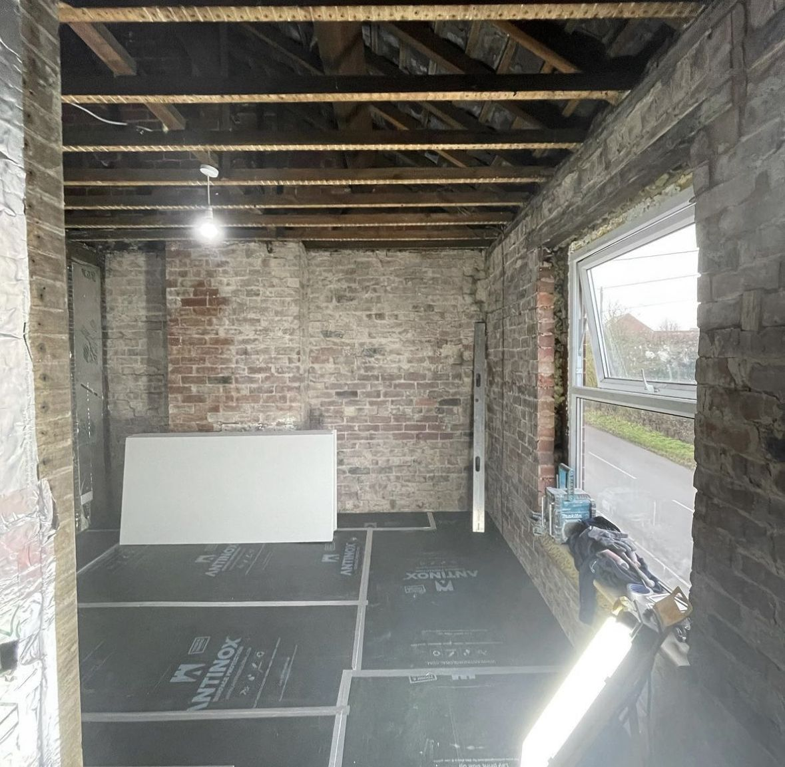
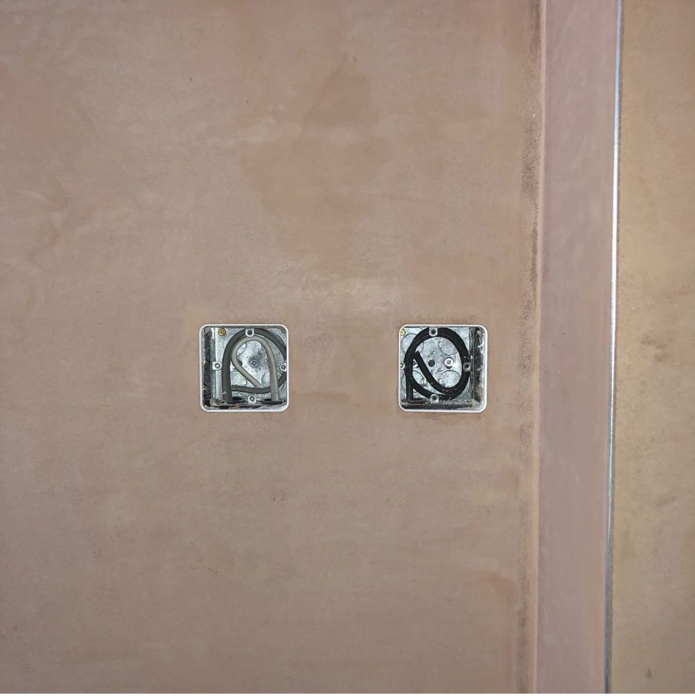

Services
From a fresh skim on a tired ceiling to polished Italian plaster and breathable lime on listed buildings. If your job doesn’t fit a box, call anyway.
Internal Plastering
The bread and butter, done right. Skimming over existing surfaces, float and set on new walls, full re-plasters on renovations and clean flat ceilings ready for paint. Commercial and domestic, one room or a whole site.
Every job gets the same prep: floors sheeted, beads set square, scrim on every joint. A skim is only as good as what’s underneath it.
- Skimming walls & ceilings, including over sound artex
- Float & set on blockwork and brick
- Full re-plasters on renovation properties
- New build plastering, plot after plot
Good to know: fresh plaster needs a mist coat, not straight emulsion. We’ll talk you through drying times before we leave.


Dry Lining & Boarding
Stud walls, ceilings, loft conversions and awkward angles around skylights — boarded, fixed at proper centres and finished ready for skim. We hang the board and we skim it, so there’s one trade responsible for the lot.
- Plasterboarding new stud work & ceilings
- Overboarding tired lath & plaster ceilings
- Insulated and acoustic board where it’s needed
- Dot & dab on masonry walls
Good to know: overboarding a shot ceiling is often cheaper and far less messy than pulling it down — we’ll tell you honestly which your ceiling needs.
External Rendering
Yorkshire weather doesn’t take it easy on the outside of a house, and neither do we. Modern silicone systems that shrug off rain and stay cleaner for longer, textured finishes, and traditional sand & cement where that’s the right call.
- Silicone render — coloured through, low maintenance
- Textured & scraped finishes
- Traditional sand & cement render
- Porches, extensions, gables and full elevations
Good to know: coloured-through silicone render never needs painting — the colour is in the material, not on it.


Venetian & Polished Plaster
Polished Italian plaster, applied in thin burnished coats until the wall has depth you can’t get from paint. Feature walls, stairwells, bathrooms and commercial spaces — plus textured and concrete-effect finishes for a rawer look.
- Polished Italian plaster (marmorino, lucidato)
- Textured feature walls
- Concrete-effect feature finishes
- Sealed for kitchens & bathrooms
Good to know: every Venetian wall is one of a kind — the pattern comes from the trowel, so no two applications ever match exactly. That’s the point.
Traditional Lime Plastering
Older buildings were built to breathe, and modern gypsum suffocates them — trapping moisture in the wall and causing damp problems. We plaster period and traditional properties in lime, the material they were built with.
- Lime plaster for period & traditional buildings
- Breathable systems over solid walls
- Barn conversions & farmhouse renovations
- Sympathetic repairs alongside original plaster
Good to know: if your house is pre-1919 with solid walls, lime is almost always the right answer — happy to explain why before you commit to anything.


Repairs & Small Works
No job too small — genuinely. Patch repairs after rewires and plumbing, cracked ceilings, blown plaster, re-skims after damp treatment. The small jobs other firms won’t price are a normal week for us.
- Patch repairs after electricians & plumbers
- Cracked & sagging ceiling repairs
- Re-skims following damp treatment
- Coving and making good around alterations
Good to know: send a photo of the damage with your message — nine times out of ten that’s enough to price it without a visit.
Not sure which finish you need?
Describe the job in plain English and we’ll recommend the right approach — and price it for free.
07557 448059